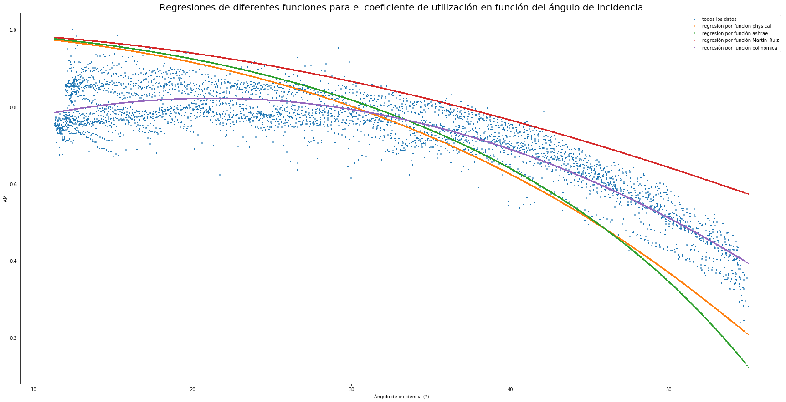
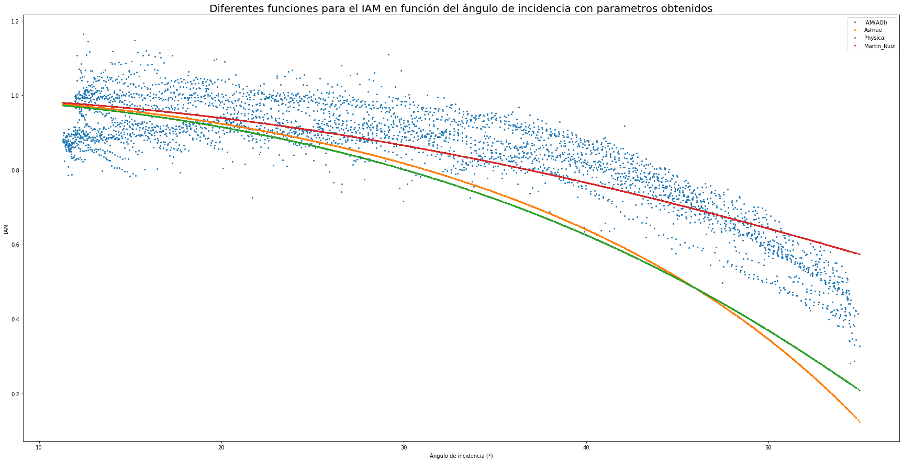

Python 3.7.4 (default, Aug 9 2019, 18:34:13) [MSC v.1915 64 bit (AMD64)]
Type "copyright", "credits" or "license" for more information.
IPython 7.13.0 -- An enhanced Interactive Python.
In [1]: runfile('C:/Users/juanj/OneDrive/Escritorio/repositorio_tfg/Comprobar_T_fija.py', wdir='C:/Users/juanj/OneDrive/Escritorio/repositorio_tfg')

El coeficiente de determinación para ashrae es: -0.0233
El valor del parámetro b usado es: 1.17
El coeficiente de determinación para physical es: 0.1134
El valor del parámetro n usado es: 0.90
El valor del parámetro k usado es: 10.90
El valor del parámetro l usado es: 0.10
El coeficiente de determinación para Martin es: (0.7567
El valor del parámetro ar usado es: 3140001.0
C:\Users\juanj\Anaconda3\lib\site-packages\pvlib\tools.py:85: RuntimeWarning: invalid value encountered in arcsin
res = np.degrees(np.arcsin(number))
El coeficiente de determinación para ashrae es: 0.2246
El valor del parámetro b usado es: 0.96
El coeficiente de determinación para physical es: 0.4681
El valor del parámetro n usado es: 2.50
El valor del parámetro k usado es: 6.59
El valor del parámetro l usado es: 1.90
El coeficiente de determinación para Martin es: (0.7567
El valor del parámetro ar usado es: 1000
El coeficiente de determinación para polinómica es: 0.8483
El valor del parametro a1 usado es: 0.0159
El valor del parametro a2 usado es: -0.0003
El valor del parametro b usado es: 0.6531

El coeficiente de determinación para ashrae es: -0.0753
El valor del parámetro b usado es: 1.17
El coeficiente de determinación para physical es: -0.0442
El valor del parámetro n usado es: 0.90
El valor del parámetro k usado es: 10.90
El valor del parámetro l usado es: 0.10
El coeficiente de determinación para Martin es: (0.7567
C:\Users\juanj\Anaconda3\lib\site-packages\pvlib\tools.py:85: RuntimeWarning: invalid value encountered in arcsin
res = np.degrees(np.arcsin(number))

El coeficiente de determinación para ashrae es: 0.8161
El valor del parámetro b usado es: 0.70
El coeficiente de determinación para physical es: 0.8236
El valor del parámetro n usado es: 0.89
El valor del parámetro k usado es: 5.39
El valor del parámetro l usado es: 0.10
El coeficiente de determinación para martin_ruiz es: 0.7519
El valor del parámetro ar usado es: 200001
El coeficiente de determinación para polinómica es: 0.8483
El valor del parametro a1 usado es: 0.0185
El valor del parametro a2 usado es: -0.0004
El valor del parametro b usado es: 0.7604
In [2]: